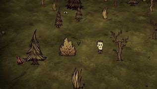

Biomas
Dont Starve (Regien of Giants)
Bosque
Este bioma tiene suelo verde, en el que se encuentran una gran cantidad de Arboles del tipo siempreverde, además en este bioma encontramos: rocas, flores, ramas, hongos, pastos, nidos de araña, tumbas y casas de cerdo. Este es el lugar de mayor abundancia de reyes árboles.


Pradera
Este bioma se caracteriza por su ausencia de árboles y su gran abundancia en hierba y conejos, además este es el único bioma donde pueden aparecer los boofalos
Pantano
Es el bioma más agresivo del juego, En este abundan los tentáculos, tritones y nidos de araña, gran parte de su dificultad se debe a que no hay ningún recurso dentro de este bioma fuera de los Juncos, que son exclusivos de este lugar. (Fuera del peligro se pueden conseguir mucho botín, resultado de la pelea entre los distintos mobs hostiles que se atacan unos a otros)

Isla de Piedras
Es un bioma repleto de rocas de todos los tipos, en ese bioma podemos encontrar hielo durante los inviernos, y es el bioma donde más encontraremos a los Pajaros Altos (se pueden encontrar pepitas de oro sueltas en el piso, y es común encontrar nidos de arañas)


Mosaico
solo hay 1 de este bioma en todo el mundo y este compuesto por pequeños parches de otros biomas, en este no se encuentra con abundancia ningún ítem en específico pero siempre encontraremos la Patata Metálica.


Ajedrez
Se caracteriza por su suelo de ajedrez, este es el único bioma donde podemos encontrar las criaturas de relojería, estatuas de maxwell y los arboles de mármol. Además la cosa de madera siempre aparecerá en este bioma


Oceano
Cumple la función de ser un límite en el mapa, ya que ninguna entidad en el juego puede pasar por ella, en invierno si te acercas lo suficiente pueden salir pingüinos del.

Cementerio
Cementerio: Siempre tiene una neblina que cubre toda su extensión, dándole un ambiente más tenebroso, en él es común encontrarse pepitas de oro en el suelo y una gran cantidad de tumbas

Bosque de abedul
Es igual al bosque normal pero en vez de tener arboles Siempreverde tien abedules, además en este se puede generar la estatua de gloomer y en los arboles huecos, hogar de los gatopaches

Desierto
Se encuentra en los bordes del mundo, es el único lugar donde se encuentras los cactus, montículos de huesos y pastos rodantes, también tiene un rebaño de cabras eléctricas. En este puede aparecer el boss Mosca Dragon en cualquier estación del año